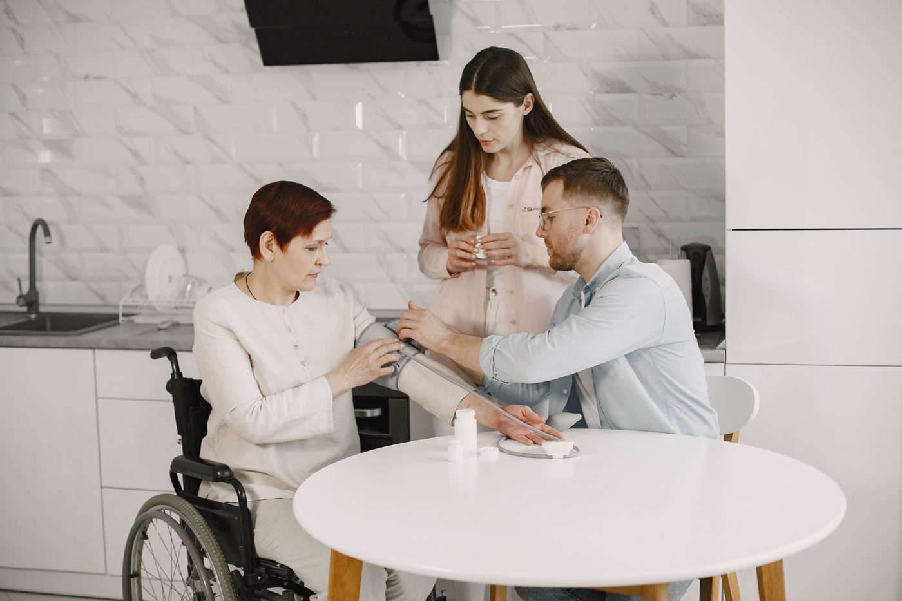

Intestinal failure & rehabilitation
Specialized intestinal rehabilitation connecting hospital care to safe care at home
AIRI is a physician-led intestinal rehabilitation program for patients with intestinal failure, short bowel syndrome, and complex nutrition needs. We work alongside the patient's existing care team to coordinate the transition from hospital to home, manage TPN and other nutrition support, and help patients progress toward greater nutritional independence.

What we do
Comprehensive intestinal rehabilitation and nutrition support
AIRI is a physician-led intestinal rehabilitation program for patients with intestinal failure, short bowel syndrome, and complex nutrition needs. We work alongside the patient's existing care team to coordinate the transition from hospital to home, manage TPN and other nutrition support, and help patients progress toward greater nutritional independence.
Hospital-to-home transitions
We coordinate discharge planning with the inpatient team, home-infusion pharmacy, and home health to support a safe transition from hospital to home total parenteral nutrition (TPN)
Oral and enteral nutrition
We develop individualized diet, enteral nutrition, and medication strategies to maximize intestinal function and help patients progress toward greater nutritional independence.
Total parenteral nutrition (TPN) and home parenteral nutrition (HPN) management
We individualize parenteral nutrition and fluid therapy based on each patient's needs, including formula adjustments, cycling, glucose and electrolyte management, and coordination with the infusion pharmacy.
Central-line management
We focus on preserving central venous access through infection prevention, access planning, thrombosis assessment, and prompt evaluation of catheter-related complications.
Clinical monitoring
We monitor hydration, kidney and liver function, electrolytes, micronutrients, bone health, and tolerance of nutrition therapy through scheduled laboratory and clinical review.
Patient and caregiver education
We teach patients and caregivers how to manage TPN safely at home, care for central lines, maintain hydration, track output, recognize warning signs, and know when to contact the care team.
Care pathway
How AIRI supports patients from referral through ongoing care
AIRI coordinates each stage of the patient's transition from hospital-based care to ongoing intestinal rehabilitation and nutrition support at home.
-
Referral
We securely review the patient's clinical and nutrition needs and coordinate with the referring care team.
-
Evaluation
We assess intestinal anatomy, nutrition and hydration needs, medications, vascular access, laboratory trends, and home support.
-
Transition
We coordinate the nutrition plan, home infusion services, patient and caregiver education, and follow-up before the patient transitions home
-
Ongoing care
We monitor nutrition and hydration, adjust parenteral support as needed, help prevent complications, and reduce dependence on parenteral nutrition when clinically appropriate
When to refer a patient
Consider referring patients who require ongoing TPN after hospitalization, have recurrent admissions related to dehydration or line complications, have difficulty advancing oral or enteral nutrition, or have other signs of intestinal failure.
Resources for patients and caregivers
Living with intestinal failure at home
Learn about living with intestinal failure at home, including TPN, central-line care, hydration and output monitoring, and when to contact your care team.